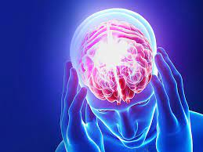
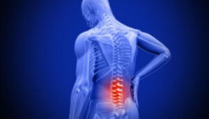
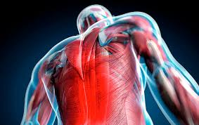
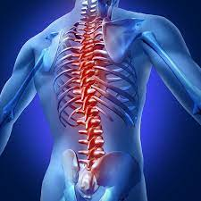
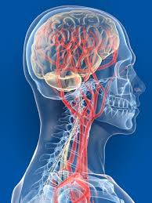
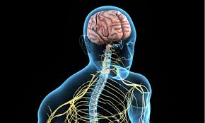
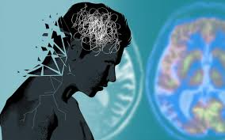
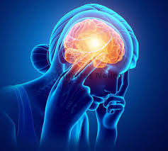

Лікування та діагностика болю різної природи та місця розташування:
-
Головний біль
Головний біль згідно класифікації ICHD-3 за рекомендаціями pain and headache society.
-
Біль у спині
Біль у спині дискогенного, радикулярного, спондилогенного, артрогенного та міогенного типів.
-
Тілесні Дискомфорт та Біль
Біль у тулубі" />Біль у тулубі, верхніх та нижніх кінцівках при компресії, патології периферічних та спинальних нервів, ураження м,язів та суглобів.
-
Лікування захворювання хребта
Дископатії: грижі дисків, протрузії, випинання. Спонділолістези: зміщення, ротації. Порушення постави: сколіози, викривлення, гіперкіфози , хвороба Шейермана-Мау.
-
Судинні захворювання центральної нервової системи
Неврологічні ускладнення гіпертонічної хвороби.
Хвороба Бінсвангера.
Порушення кровообігу у судинах: артеріях, венах шиї , голови та очах.
Порушення кровообігу у судинах головного та спиного мозку: атеросклероз, гіпертонічна ангіопатія, вертеброгенні деформації хребетних артерій.
Синдром Барре-л’еу.
Синдром Унтерхайнштайна.
Drop атаки.
Порушення венозного відтоку з порожнини черепа.
Венозна енцефалопатія.
Доброякісна внутришньочерепна лікворна гіпертензія.
Церебральні ліквородинамічні порушення.
-
Вегетативні судинні розлади
Судинні кризи. Артеріальна гіпертензія та гіпотензія. Соматоформний розлад вегетативної нервової системи.
-
Координаторні порушення
Головокружіння, запоморочення, хиткість центрального та периферичного типів. Діагностика та лікування втрати свідомості.
-
Психічні розлади
Тривожні розлади, Депресія, панічні атаки.
-
Шум в вухах
